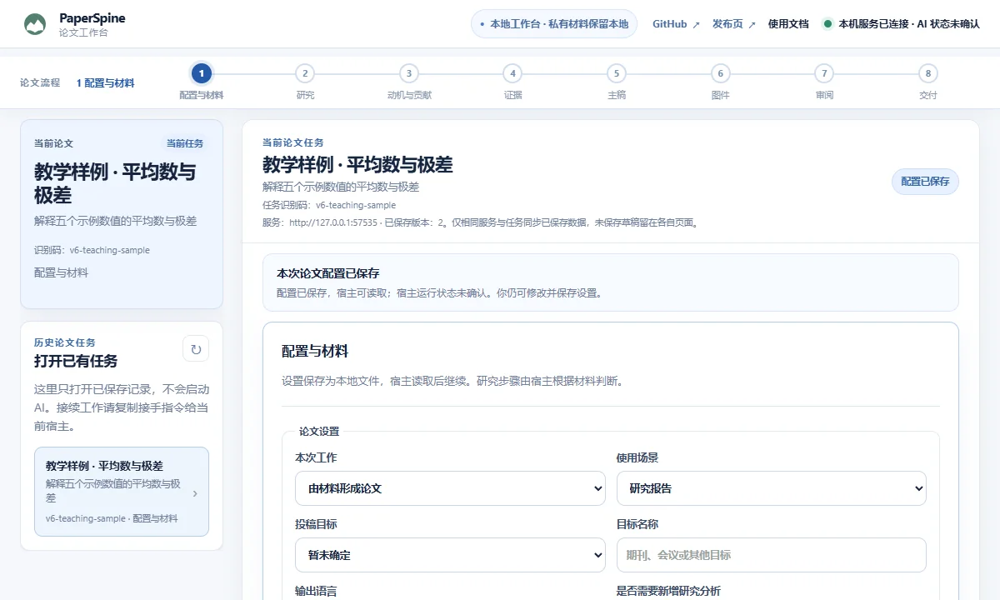

PaperSpine V6
PaperSpine V6全流程 Skill
一次调用 $paper-spine。适合从一个研究问题或现成材料出发，在对话里推进整篇论文。
支持 Skill 的宿主 · @SKILL_SIZE@
下载全流程 SkillV6 · @VERSION@ 公测 · MIT
从题目、结果或已有稿件出发。让 Agent 学习真实参考文献，整理证据、写作、制图并交付可编辑稿件。需要界面时，再打开本地工作台。

一次调用 $paper-spine。适合从一个研究问题或现成材料出发，在对话里推进整篇论文。
支持 Skill 的宿主 · @SKILL_SIZE@
下载全流程 Skill保留全流程入口。研究、Followwriting、制图、审阅和交付也可独立调用，方便反复做单项工作。
支持 Skill 的宿主 · @PACK_SIZE@
下载 Skills 包安装同一组 Skills 和本地工作台。在网页保存配置、比较图件、预览稿件和提交返修意见。
Windows x64 · Codex · @WEB_SIZE@
下载 Web 插件包Followwriting 按需读一篇或多篇参考论文，学习论证和表达方式。研究结论来自你自己的证据，改写可保留可核对的原文位置和写法对照。
安装管理器按所选方式整包更新、回退和卸载。公开发行包内置 V6 频道，可以关闭自动检查。旧 V5 的自动更新仍走原频道。